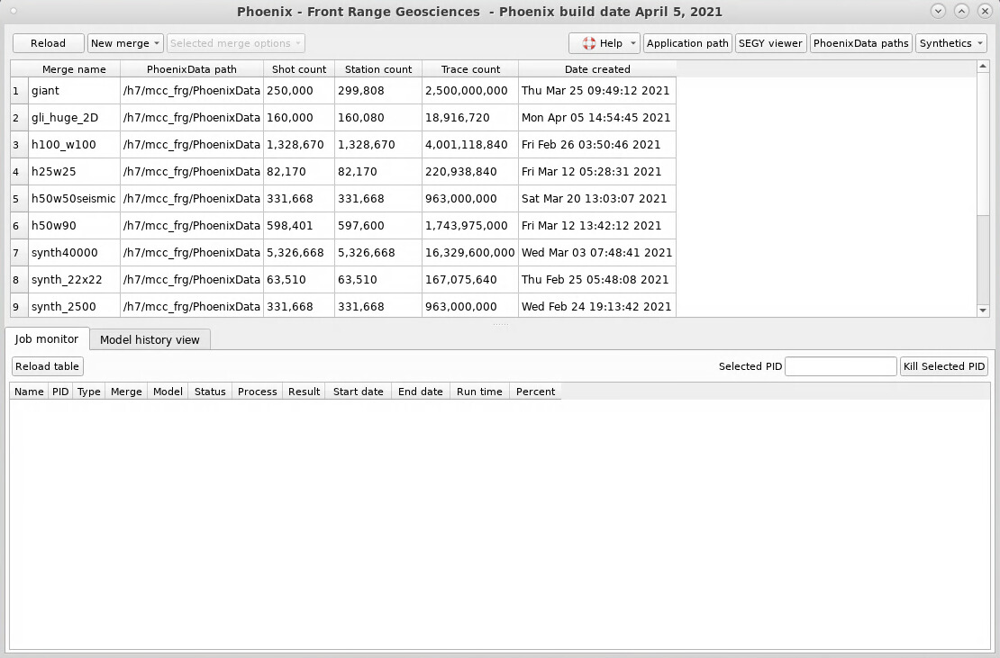
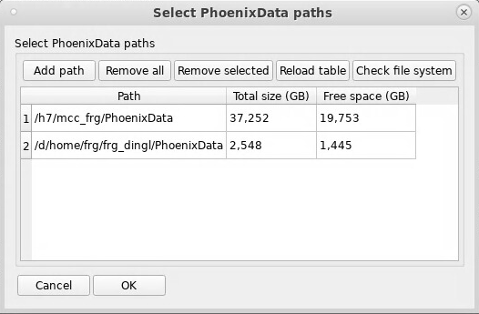
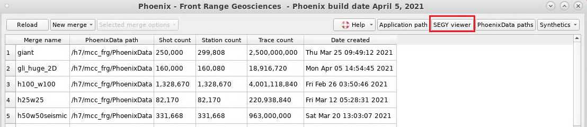
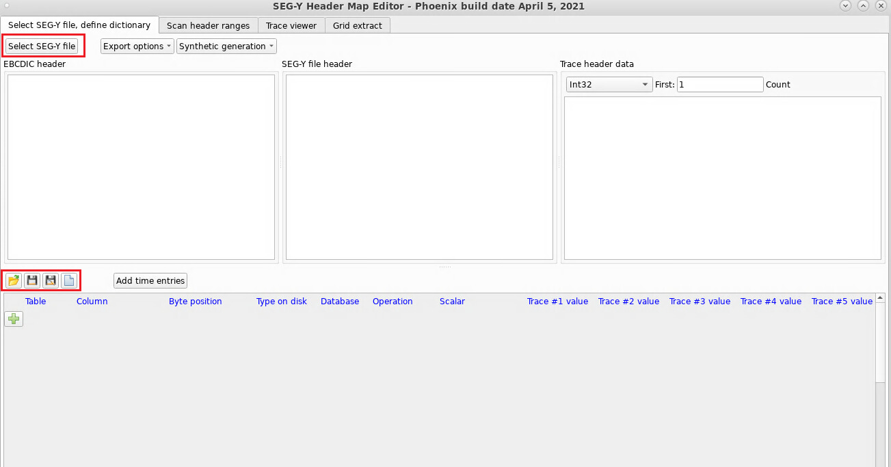
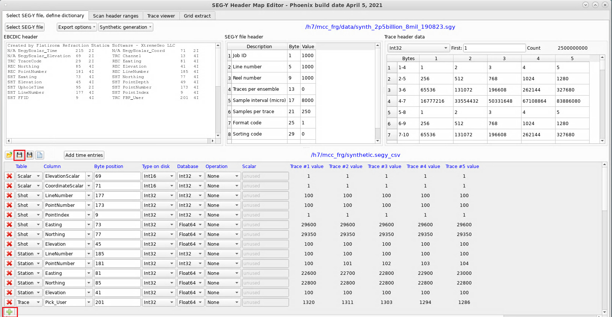

This is the Phoenix Main Window. All Merges (projects) are listed here. To open a Merge or an associated window (Picker, Delay Time Model, VNS Model, etc.), right-click on that row and select the desired window from the dropdown menu.
Before using Phoenix, users should set up their PhoenixData directory/directories. To do so, click the “PhoenixData paths” button on the top right of the Main Window.
A new window will pop up:

Use this window to add or remove disk storage locations. Make sure there is sufficient disk space for projects and compressed seismic data.
To import data and create a new merge, you must define a SEG-Y dictionary, then launch the Import Wizard.
To open the dictionary editor, click the “SEG-Y Viewer” button on the top right of the Main Window:

This will bring up the Dictionary Editor/SEG-Y Viewer window:

The SEG-Y Viewer is on the top half, and the Dictionary Editor is on the bottom half.
To load a SEG-Y file, click the “Select SEG-Y file” button on the top right. To create a new dictionary, load and existing one, or save the current dictionary, click the appropriate button in the panel along the middle left.
Edit the dictionary so that the header mappings are correct for the SEG-Y file, then save the dictionary. New rows may be added to the dictionary by clicking the plus sign button.

[b]Notes on SEG-Y Dictionaries:[/b]
Shots and stations are uniquely identified by three numbers - LineNumber, PointNumber, and PointIndex. This follows the SPS standard, which can be found here.
The following information must be available in the SEGY trace headers:
| Table | Column | Required? |
|---|---|---|
| Shot | LineNumber | Optional, strongly recommended for 3D surveys |
| Shot | PointNumber | Yes |
| Shot | PointIndex | Optional replant code - suggest using FFID for this field |
| Shot | Easting | Yes |
| Shot | Northing | Yes |
| Shot | Elevation | Yes |
| Shot | Depth | Optional - required for dynamite data |
| Shot | Uphole | Optional - required for dynamite data |
| Shot | WaterDepth | Optional - required for marine/OBC data |
| Station | LineNumber | Optional, strongly recommended for 3D surveys |
| Station | PointNumber | Yes |
| Station | PointIndex | Optional replant code |
| Station | Easting | Yes |
| Station | Northing | Yes |
| Station | Elevation | Yes |
| Station | Depth | Optional- required for OBC |
| Station | WaterDepth | Optional - required for marine/OBC data |
| Trace | Pick_User | Optional |
Additional user data may be imported into the shot and station databases (i.e. first break picks, statics, etc.).
To launch the Import Wizard, click the “New merge” button, then select “Import SEGY data”. The other import options will be covered in other tutorials.
[](Resources/SegyImport/phx-import-05newmergemenu.png
This will bring up a window with the Import Wizard.
[](Resources/SegyImport/phx-import-06importpg1.png
Specify the project name for this Merge.
The bin size is only used internally in Phoenix and does not need to have any relation to your processing grid.
The location dropdown displays PhoenixData directories defined in the Main Window. Disk access speed should be prioritized for project data storage; the disk location selected here should be optimized for access speed in addition to possessing the necessary disk space to store the database tables for the project. SSD raid arrays are preferred. (Please note, this option selects the storage location for the Merge, which does not contain seismic data. Seismic data storage location will be selected on Page 3 of the Import Wizard).
Select feet or meters for project units.
[](Resources/SegyImport/phx-import-07importpg2.png
Click the folder icon to select a Dicitonary File (Header Map).
Click the “Add” button to select SEG-Y files to add to the import. Click the “Clear” button to clear existing selected files.
[](Resources/SegyImport/phx-import-08importpg3.png
Datasets are the means by which compressed seismic data are stored and organized. These Datasets contain the compressed data as well as indexing information so that the Merge (project) can access the data.
Access is optimized by splitting the data for a project into multiple independent Datasets.
Specify desired options for generating Datasets.
Larger surveys should be split into a larger number of Datasets. For testing purposes, we split a 2.5 billion trace survey into 20 Datasets and a 4 billion trace survey into 80 Datasets.
Set the maximum time and sample rate for the compressed seismic data.
Verbose console print is useful for troubleshooting, checkpointing, and debugging purposes.
An import log may be generated if desired.
The multithreaded import is recommended if creating multiple Datasets (which is almost always the case).
Select the desired location(s) for Dataset storage. Selected locations must have sufficient disk space to store all compressed seismic data for the survey. Disk access speed should be prioritized for seismic data storage if possible (given space requirements). SSD raid arrays are preferred. (Note: only select disk locations that have sufficient disk space to store seismic data. Do not select disks with insufficient space; this will break the import).
[](Resources/SegyImport/phx-import-09importpg4.png
If you are using Sparse CMPs, select the check box and specify desired options for CMP spacing, offset limits, etc.
Once you are done, click “Finish”.
When the Import Job launches, it will appear in the bottom half of the Phoenix Main Window:
[](Resources/SegyImport/phx-import-10mainwindowrunning.png
Once the Import Job is finished, the program will automatically open the Merge Manager Window:
[](Resources/SegyImport/phx-import-11importcomplete.png